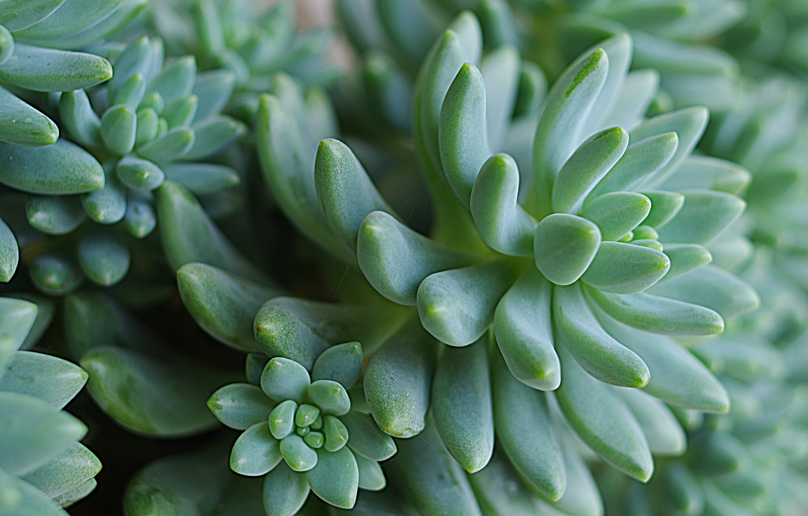
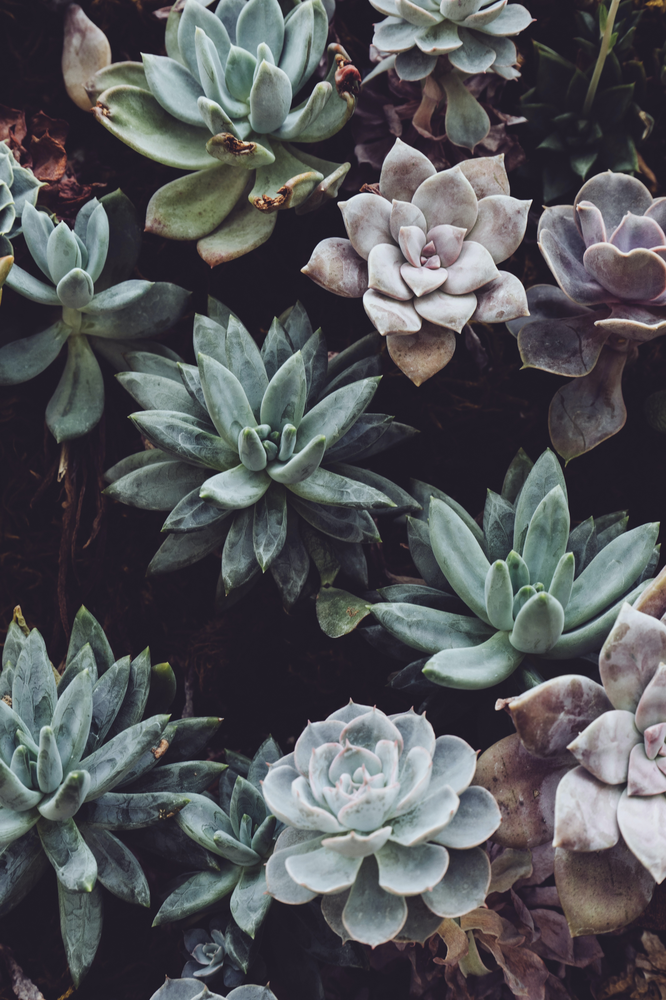
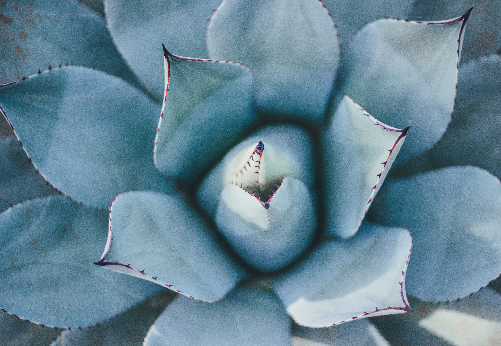
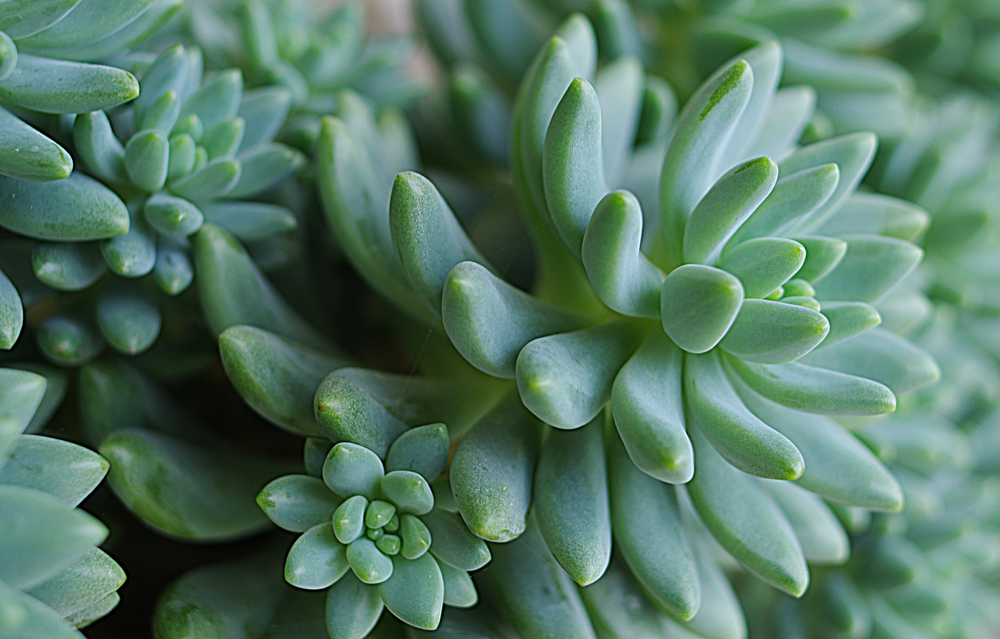
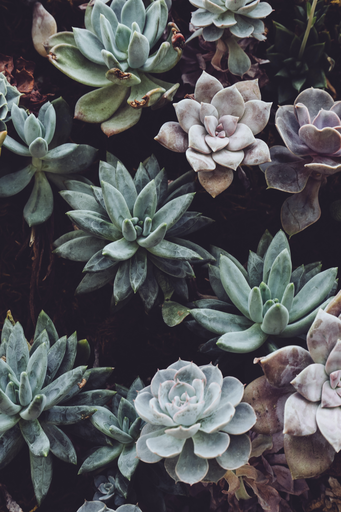
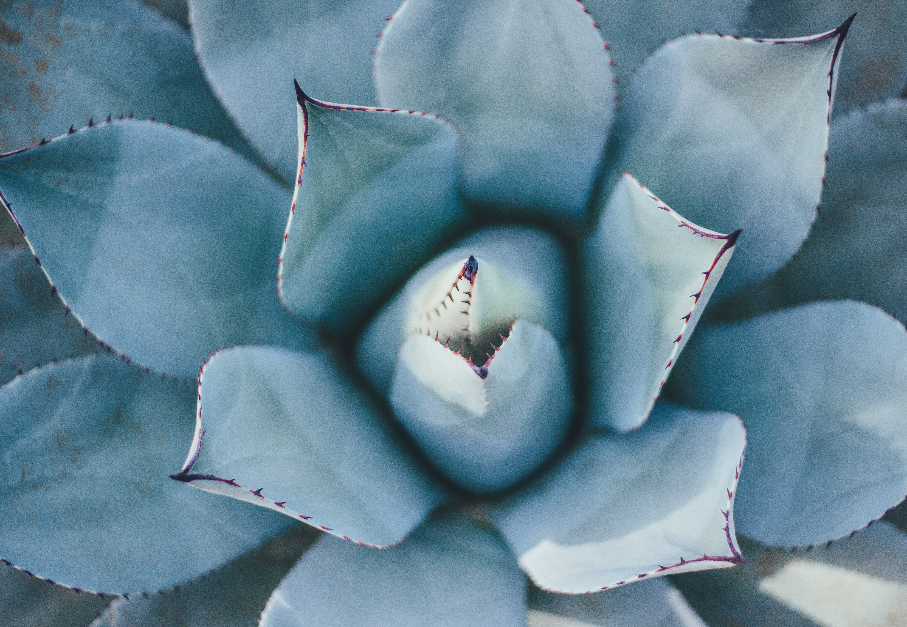

  

One of my favourite plants are indoor house plants - although Monty might not agree.
🌱 🍀 🌼 🌴 🌻 🌲 🌵 I love surrounding myself with indoor jungles 🌻 🌲 🌵 🌼 🌴 🌱 🍀
  
Variegated Monstera is a rare plant that has been genetically mutated to create usual colour and patterns